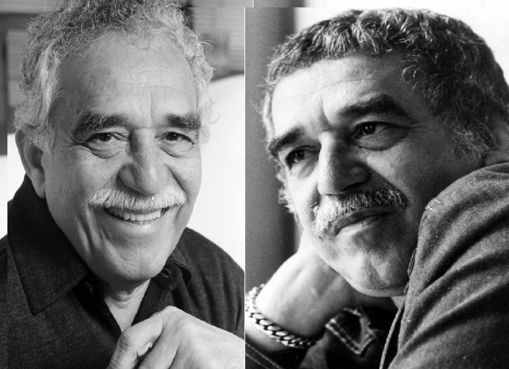
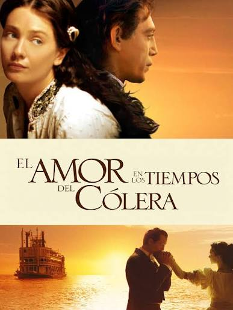

Exposición Contemporánea
Explorando el realismo y la irreverencia.

"La irreverencia del genio"
Homenaje a Gabriel García Márquez
Una pieza impactante que combina el retrato al óleo con texturas mixtas, capturando un gesto audaz, humano y alejado de la solemnidad tradicional del Nobel colombiano.

"El rostro del realismo mágico"
Homenaje a Gabriel García Márquez
Un retrato al óleo de gran fuerza expresiva donde Hernán Merino resalta la esencia creativa de Gabriel García Márquez mediante una vibrante paleta de colores que evoca el universo de Macondo y el legado del autor de Cien años de soledad.
Obras destacadas de Gabriel García Márquez
"Cien años de soledad"
1967
La novela más emblemática del realismo mágico. Narra la historia de la familia Buendía a lo largo de generaciones en el mítico Macondo.

"El amor en los tiempos del cólera"
1985
Una historia de amor perseverante, ambientada en el Caribe colombiano, que explora la espera, el paso del tiempo y la pasión.
"Crónica de una muerte anunciada"
1981
Crónica periodística y novela a la vez, retrata la reconstrucción de un crimen anunciado por todo un pueblo.